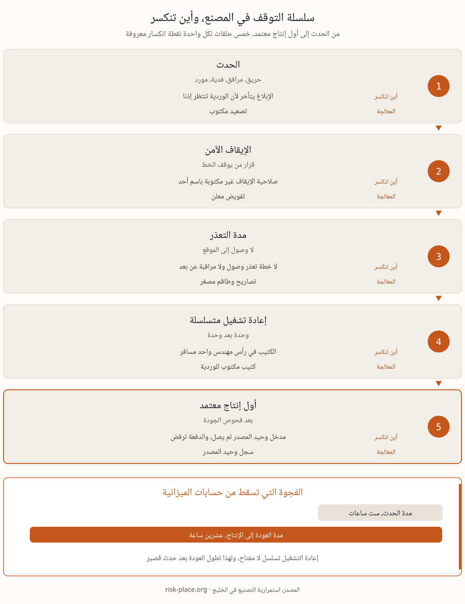

استعادة الإنتاج ليست قرارا لحظيا كما يفترض من لم يقض وردية كاملة داخل مصنع. إعادة التشغيل عملية لها تسلسل ملزم، فالخطوط تعود واحدا بعد الآخر، ويسبقها تطهير الخطوط وتسخين الأفران واستقرار الحرارة والضغط وفحوص الجودة والسلامة قبل اعتماد أول إنتاج للبيع. ولهذا يكلف توقف ست ساعات عشرين ساعة من التعافي في حالات ليست نادرة، وهذه الفجوة بين مدة الحدث ومدة العودة هي ما تسقطه لجان الميزانية حين تناقش أي إجراء وقائي. والسمة الثانية أن الفيزياء ثابتة، فالتقسيم إلى أقسام ومسافات العزل وازدواجية المرافق تقرر في مرحلة التصميم قبل سنوات من الحادث، ولا تشترى يوم الأزمة بأي مبلغ. ومن هنا تصبح مراجعة الاستمرارية عند أي تعديل في المنشأة، من خط يضاف إلى مستودع يوسع، أرخص تأمين تشتريه الشركة على الإطلاق. ومن أراد الأساس الإداري وراء ذلك يجده في صفحة تعريف استمرارية الأعمال.
خمسة مسارات تغطي أغلب ما يوقف مصنعا في المنطقة، ولكل مسار محفز معتاد وعامل واحد يحدد حجم الضرر أكثر من غيره.
| المسار | المحفز المعتاد | ما يحدد حجم الضرر |
|---|---|---|
| حريق أو انفجار | أعمال ساخنة وتخزين وقود وغبار قابل للاشتعال وارتطام خارجي | التقسيم إلى أقسام ومسافات العزل، وقد صممت قبل سنوات |
| انقطاع المرافق | كهرباء أو غاز أو ماء أو تبريد | قدرة العبور المؤقت وانضباط الإيقاف الآمن |
| حادث في التقنية التشغيلية أو المعلوماتية | برمجية فدية تصل إلى SCADA أو ERP، فالخط سليم والتحكم ليس كذلك | تقسيم الشبكة ووضع يدوي جرى التدرب عليه |
| تعثر مورد | مدخل وحيد المصدر يتوقف وصوله | سياسة المخزون ومصدر ثان مؤهل، ويقرران في وقت السلم |
| إغلاق المنطقة | حادث قريب يغلق النطاق، فالمنشأة سليمة والوصول إليها متعذر | المراقبة عن بعد وتصاريح الطاقم المصغر وتسلسل إعادة التشغيل |

كلفة الساعة المتوقفة لكل خط ليست تمرينا محاسبيا، بل هي عملة الحديث مع المالية والتأمين والمشتري. وتتكون من أربعة بنود، الهامش المفقود من الطن الذي لم ينتج، وغرامات التأخير في عقود التوريد، وكلفة إعادة التشغيل من طاقة ومواد مساعدة وعمالة إضافية، والهدر من الدفعة التالفة. وتحسب بالساعة وباليوم ولخط بعينه لا لمجمع الشركة، لأن المتوسط يخفي أن خطا واحدا قد يحمل نصف الهامش. ومصدر هذا الرقم هو تحليل أثر الأعمال، وهو ما ينقل النقاش بين الصيانة والمالية من التفضيلات إلى الأرقام. ومنه تشتق أقصى مدة توقف محتملة لكل خط والحد الأدنى المقبول من الإنتاج الذي يبقي العقود قائمة، وصياغتهما في صفحة أهداف التعافي. وإن كانت الميزانية محدودة فابدؤوا بناتجين، كلفة التوقف لكل خط محسوبة بصدق ثم كتيب إعادة التشغيل، فهما يستغرقان عادة من ثلاثة إلى أربعة أسابيع ويغيران بعدها تسعير كل قرار مخاطرة.
خطة المصنع التي تعمل يوم الحادث تتكون من خمسة نواتج ملموسة، وما زاد عليها زينة.
الحادث السيبراني في المصنع لا يحرق شيئا ولا يكسر شيئا، بل يفصل الخط عن التحكم فيه. وبرمجية الفدية التي تصل إلى SCADA أو إلى ERP تترك المعدات سليمة بينما تعجز الوردية عن تشغيلها. والرد المألوف على هذا الخطر أن الشبكة التشغيلية معزولة هوائيا، والسؤال الأنفع ليس هل هي معزولة بل متى جرى التحقق من ذلك آخر مرة، ومن راجع وصول المزودين عن بعد وإجراءات وسائط USB وحواسيب الهندسة المتنقلة بين الشبكتين. معظم المصانع الموصوفة بالعزل معزولة على المخطط وموصولة في الممارسة. والضابطان اللذان يقرران حجم الضرر هنا هما تقسيم الشبكة ووضع يدوي جرى التدرب عليه فعلا، وتمرين هذا الوضع مرة في السنة تأمين رخيص في الحالتين، سواء صح العزل أم لم يصح. وترتيب أول ستين دقيقة في صفحة الساعة الأولى وفي تعريف إدارة الأزمات.
أكثر السيناريوهات إزعاجا ليس الذي يدمر أصلا، بل الذي يترك كل شيء سليما ويمنع الوصول إليه، فحادث في الجوار يغلق النطاق ويترك منشأة كاملة معداتها في مكانها ولا يدخلها أحد. وسيناريو الطائرة المسيرة أو إغلاق المجال الجوي يعالج بالمنطق نفسه، بوصفه سيناريو إغلاق منطقة وحريق لا بوصفه نقاشا دفاعيا. وثلاثة إجراءات تكفي عمليا، حماية سلبية متناسبة مثل السواتر الشبكية فوق تخزين الوقود المكشوف والتقسيم إلى أقسام، وخطة تعذر وصول لاثنتين وسبعين ساعة، ومراجعة صياغة وثيقة تأمين انقطاع الأعمال للتأكد من تغطية الحريق الناتج عن ارتطام خارجي. انضباط تشغيلي بلا دراما، والسيناريو مفصل للمنشآت في صفحة جاهزية حوادث الطائرات المسيرة (بالإنجليزية).
المنشآت الصناعية في الإمارات قريبة من محيط المعيار الوطني NCEMA 7000، مباشرة إن صنفت بنية تحتية حيوية، وغير مباشرة بوصفها موردا لمن صنف كذلك، وما ينساب منه عبر العقود مشروح في صفحة الموردين والمقاولين (بالإنجليزية). وفي الوقت نفسه شددت شركات التأمين أسئلة انقطاع الأعمال بعد خسائر إقليمية حديثة، وبدأ كبار المشترين يجرون تدقيقات استمرارية على مورديهم. والمصنع الذي يملك خطة مختبرة ورقم توقف مسعرا يجيب عن المحادثات الثلاث من المجلد نفسه. أما خريطة من يخضع لأي متطلب في الدولة ففي صفحة استمرارية الأعمال في الإمارات. وفي الميدان تتكرر أربعة أخطاء بعينها.
ندقق نظام الاستمرارية لديكم مقابل AE/SCNS/NCEMA 7000 والأيزو 22301، ثم نرفع المقاييس التي تقرر البقاء، مع مسوحات المخاطر والمنهجية والتدريب في الموقع حيث تحتاجون.
كيف يعمل التدقيق ←